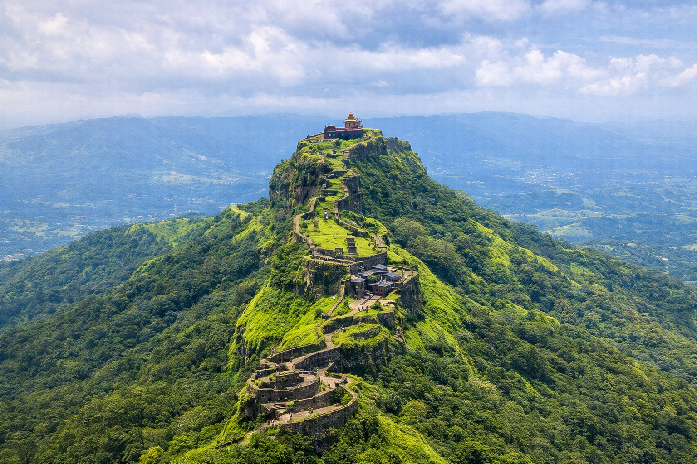
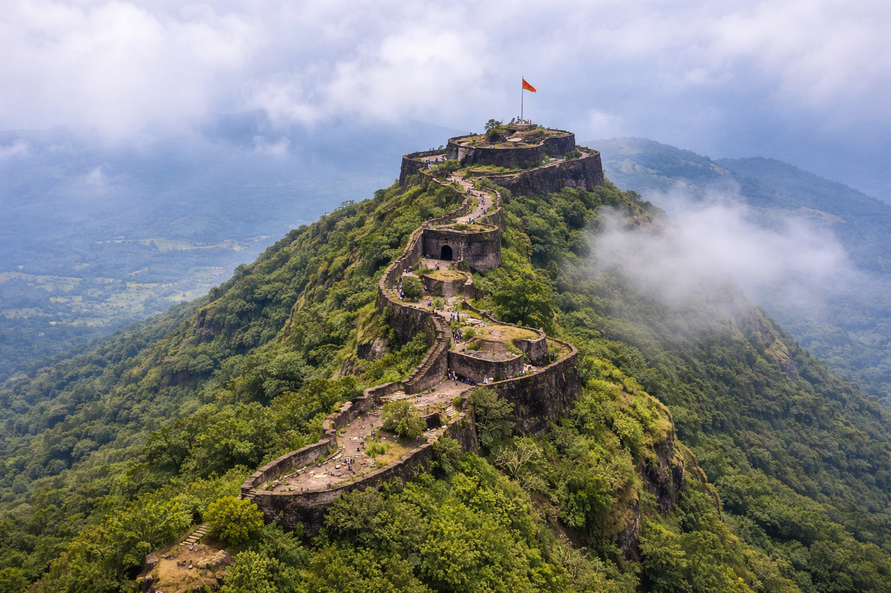
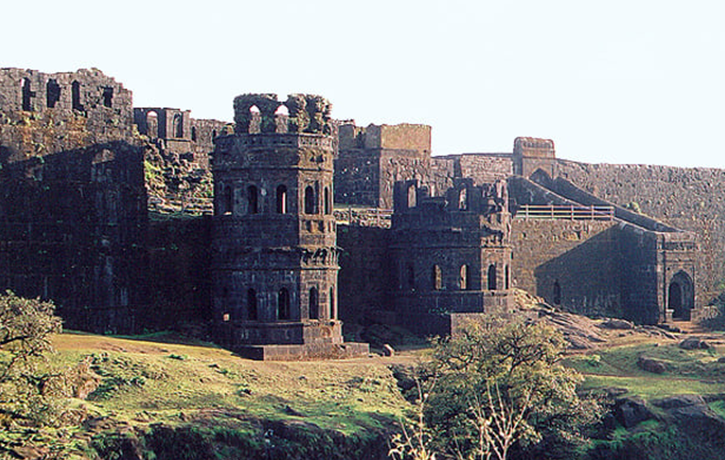
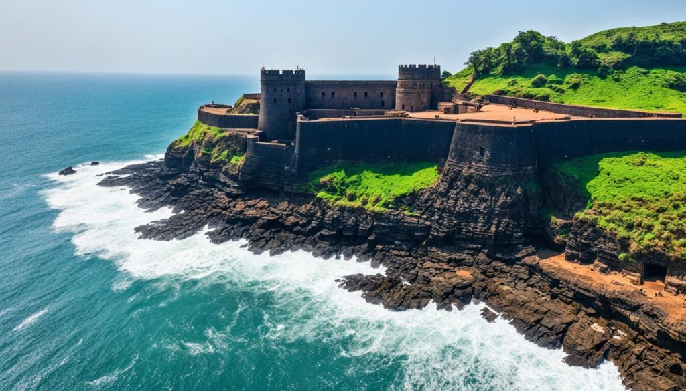
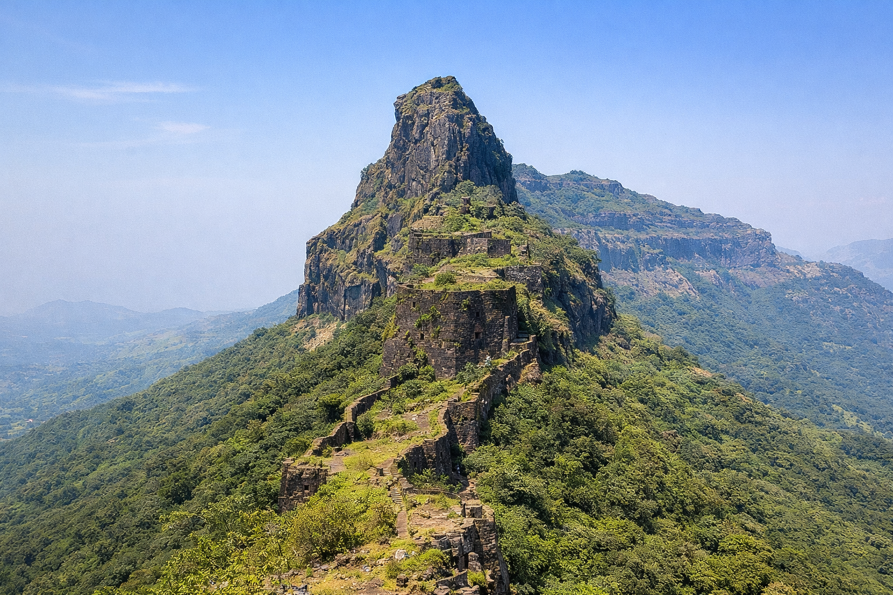
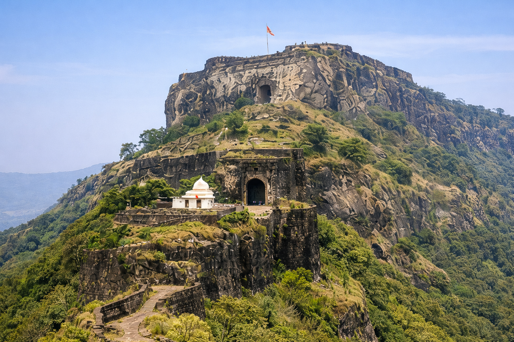

📍 Sahyadri Range Hill FortOnce the capital of Chhatrapati Shivaji Maharaj's empire for 26 years, Rajgad is one of the largest and most strategically significant forts in Maharashtra. Standing at 4,514 ft, it offers breathtaking views of the Sahyadri range.

📍 Pune Region Hill FortFamous for the heroic battle of 1670 where Tanaji Malusare sacrificed his life to recapture the fort for Shivaji Maharaj. Sinhagad, meaning "Lion's Fort," is a popular day-trek from Pune offering panoramic city views.

📍 Konkan Coast Hill FortThe imperial capital of the Maratha Empire where Shivaji Maharaj was crowned the first Chhatrapati in 1674. Perched at 2,700 ft, Raigad is connected by a ropeway and is a deeply revered historical site for Marathis.
Home to the breathtaking Konkan Kada — a concave cliff that curves inward with a sheer 3,000 ft drop. One of the most dramatic trekking destinations in India, with ancient cave temples, Kedareshwar cave, and stunning Sahyadri views.

📍 Konkan Coast Sea FortBuilt on a rocky island in the Arabian Sea by Shivaji Maharaj in 1664, Sindhudurg is the greatest sea fort of the Maratha navy. The fort walls stretch 3 km and legend says Shivaji's handprint is preserved in the stone.
Originally called Devagiri and built atop a 200 m conical rock, Daulatabad is considered one of India's most impregnable fortresses. It served as the capital of the Yadava dynasty and later the Delhi Sultanate in the 14th century.

📍 Sahyadri Range Hill FortThe first fort captured by the young Shivaji Maharaj at just 16 years of age in 1643, marking the beginning of the Maratha Empire. At 4,603 ft, Torna is the highest fort in the Pune district and a tough but rewarding trek.
Site of the legendary Battle of Pratapgad in 1659 where Shivaji Maharaj defeated and killed Afzal Khan. The fort houses a temple of Goddess Bhavani and a large statue of Shivaji Maharaj visible from miles away.

📍 Nashik Region Hill FortThe birthplace of Chhatrapati Shivaji Maharaj, born on February 19, 1630. Shivneri holds immense emotional and historical importance for the Marathi people. The fort contains a temple and a statue marking Shivaji's birthplace.
Known as one of India's most thrilling and dangerous treks, Kalavantin Durg is a knife-edge pinnacle rising from the Sahyadri. Ancient rock-cut steps carved directly into the cliff face make this an unforgettable adventure for experienced trekkers only.
Meaning "Iron Fort," Lohagad stands at 3,389 ft and is famous for its iconic scorpion-shaped Vinchukata wall that juts out over the valley. An easy, well-maintained trek that is perfect for beginners and families.